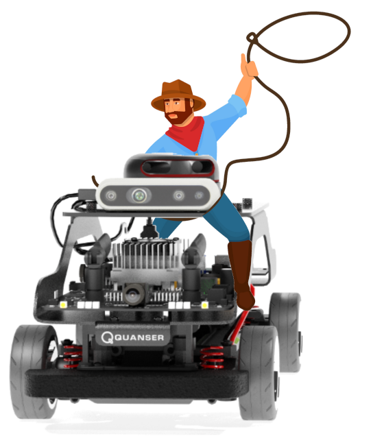

Cars
{kind=link}
Description
Cars are considered “actors” in the Virtual Self Driving Car Studio. The car library controls the QCars that are placed in the workspace of the Quanser Interactive Labs.
Library
Constants
- QLabsQCar.ID_QCAR = 160
- QLabsQCar.FCN_QCAR_SET_VELOCITY_AND_REQUEST_STATE = 10
- QLabsQCar.FCN_QCAR_VELOCITY_STATE_RESPONSE = 11
- QLabsQCar.FCN_QCAR_SET_TRANSFORM_AND_REQUEST_STATE = 12
- QLabsQCar.FCN_QCAR_TRANSFORM_STATE_RESPONSE = 13
- QLabsQCar.FCN_QCAR_POSSESS = 20
- QLabsQCar.FCN_QCAR_POSSESS_ACK = 21
- QLabsQCar.FCN_QCAR_CAMERA_DATA_REQUEST = 100
- QLabsQCar.FCN_QCAR_CAMERA_DATA_RESPONSE = 101
- QLabsQCar.CAMERA_CSI_RIGHT = 0
- QLabsQCar.CAMERA_CSI_BACK = 1
- QLabsQCar.CAMERA_CSI_LEFT = 2
- QLabsQCar.CAMERA_CSI_FRONT = 3
- QLabsQCar.CAMERA_RGB = 4
- QLabsQCar.CAMERA_DEPTH = 5
- QLabsQCar.CAMERA_OVERHEAD = 6
- QLabsQCar.CAMERA_TRAILING = 7
Methods
- QLabsQCar.spawn(qlabs, actorNumber, location, rotation, configuration=0, waitForConfirmation=True)[source]
- QLabsQCar.spawn_degrees(qlabs, actorNumber, location, rotation, configuration=0, waitForConfirmation=True)[source]
- QLabsQCar.set_transform_and_request_state(qlabs, actorNumber, x, y, z, roll, pitch, yaw, enableDynamics, headlights, leftTurnSignal, rightTurnSignal, brake, honk, waitForConfirmation=True)[source]
Configurations
There are no configurations options for the QCar.
Connection Points
Tutorial
Example 1
Example 2
Example 3
Driving Cars
See Also: